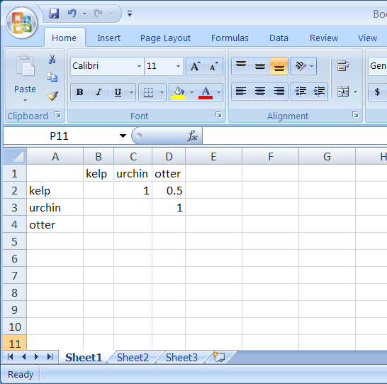

Constructing an ecosystem model
There are many ways to construct an ecosystem model. The program uses models in the format of symmetric table from a spreadsheet. At the current time, the table must be saved as a csv file. To import from a .csv file, click Import and browse to select your .csv spreadsheet.
To create a .csv file from a spreadsheet (the most common format for a table you have created, such as in Excel), follow the instructions below:
Construct a symmetric table with the first column containing row headers. Each row header is filled with a single or multiple terms to represent an ecosystem component
For example, the term kelp may be used to represent one ecosystem component, or you may choose to represent this component with the terms of kelp, seaweed, plant, in which case each term should be listed (no “or” is necessary). Boolean search capabilities are included.
Column headings (along the top in the first row) must be identical to the row headers
Fill in cells with linkage values from zero to one for the top right side of the table.

Save As a comma delimited file (.csv)
If you use phrases, add double quotes around each of your phrases (make sure to adjust for column and row headers consistently - table must be symmetric)